<meta charset="utf-8">
<title>베를린 도착 첫날 저녁 4시간 반 — 나의 투자 그리고 행복한 여행</title>
<meta name="description" content="베를린 공항에서 시내로 들어와 이스트사이드갤러리, 알렉산더광장, 박물관섬, 전승기념탑까지 도착 당일 4시간 32분 동선과 요금 정리.">
<meta name="viewport" content="width=device-width, initial-scale=1">
<link rel="canonical" href="https://danielmoon82.github.io/moon/posts/berlin-first-evening-course-2026-09-16.html">
<link rel="preconnect" href="https://fonts.googleapis.com">
<link rel="preconnect" href="https://fonts.gstatic.com" crossorigin>
<link rel="stylesheet" href="https://fonts.googleapis.com/css2?family=Hahmlet:wght@400;600;800&family=IBM+Plex+Mono:wght@400;500&family=IBM+Plex+Sans+KR:wght@300;400;500;600&display=swap">

<style>
  :root{
    --paper:#F2EEE6;--surface:#FAF8F3;--surface-2:#E7E1D5;
    --ink:#191510;--ink-2:#4A4235;--ink-3:#7D7364;
    --line:#D6CEBF;--line-soft:#E4DDD0;--accent:#B06A15;--accent-bright:#C2761A;
    --up:#E5484D;--down:#3B82F6;
    --f-display:"Hahmlet",'Nanum Myeongjo',"Apple SD Gothic Neo",serif;
    --f-body:"IBM Plex Sans KR","Apple SD Gothic Neo","Malgun Gothic",sans-serif;
    --f-mono:"IBM Plex Mono","SFMono-Regular",Consolas,monospace;
    --pad:clamp(20px,5vw,64px);
  }
  @media (prefers-color-scheme:dark){
    :root:not([data-theme="light"]){
      --paper:#0B1120;--surface:#121A2C;--surface-2:#1A2439;
      --ink:#E9EEF7;--ink-2:#A9B5C9;--ink-3:#72809A;
      --line:#26314A;--line-soft:#1D2739;--accent:#E8A33D;--accent-bright:#F0B45C;
    }
  }
  *{box-sizing:border-box;}
  body{margin:0;background:var(--paper);color:var(--ink);font-family:var(--f-body);
    font-weight:300;font-size:1rem;line-height:1.75;-webkit-font-smoothing:antialiased;}
  a{color:inherit;}
  img{max-width:100%;height:auto;}
  .wrap{max-width:760px;margin:0 auto;padding-inline:var(--pad);}
  .nav{position:sticky;top:0;z-index:20;background:color-mix(in srgb,var(--paper) 88%,transparent);
    backdrop-filter:saturate(180%) blur(12px);border-bottom:1px solid var(--line);}
  .nav-in{display:flex;align-items:center;justify-content:space-between;height:58px;}
  .brand{font-family:var(--f-display);font-weight:600;font-size:1rem;letter-spacing:-.02em;text-decoration:none;}
  .back{font-family:var(--f-mono);font-size:.72rem;color:var(--ink-3);text-decoration:none;}
  .article{padding-block:clamp(40px,7vw,72px) clamp(56px,9vw,96px);}
  .eyebrow{font-family:var(--f-mono);font-size:.68rem;letter-spacing:.16em;text-transform:uppercase;
    color:var(--accent);margin:0 0 14px;}
  h1{font-family:var(--f-display);font-weight:800;font-size:clamp(1.6rem,4.4vw,2.3rem);
    line-height:1.3;letter-spacing:-.03em;margin:0 0 16px;}
  .byline{font-family:var(--f-mono);font-size:.72rem;color:var(--ink-3);
    padding-bottom:24px;border-bottom:1px solid var(--line);margin-bottom:32px;}
  h2{font-family:var(--f-display);font-weight:600;font-size:1.25rem;letter-spacing:-.02em;margin:42px 0 14px;}
  h3{font-family:var(--f-display);font-weight:600;font-size:1.05rem;letter-spacing:-.02em;
    margin:30px 0 10px;padding-top:14px;border-top:1px solid var(--line-soft);}
  h3 .code{font-family:var(--f-mono);font-size:.7rem;font-weight:400;color:var(--ink-3);margin-left:6px;}
  p{margin:0 0 18px;color:var(--ink-2);}
  ul.checks{margin:0 0 18px;padding-left:20px;color:var(--ink-2);}
  ul.checks li{margin-bottom:8px;font-size:.94rem;}
  table{width:100%;border-collapse:collapse;font-size:.88rem;margin-bottom:8px;}
  th{font-family:var(--f-mono);font-size:.66rem;letter-spacing:.06em;text-transform:uppercase;
    color:var(--ink-3);text-align:right;padding:8px 6px;border-bottom:1px solid var(--line);}
  th:first-child{text-align:left;}
  td{padding:10px 6px;border-bottom:1px solid var(--line-soft);color:var(--ink-2);}
  td.num{font-family:var(--f-mono);text-align:right;font-variant-numeric:tabular-nums;}
  td.up{color:var(--up);} td.down{color:var(--down);}
  .scroll{overflow-x:auto;}
  figure{margin:22px 0;}
  figure img{display:block;border-radius:3px;background:var(--surface-2);}
  figcaption{margin-top:8px;font-family:var(--f-mono);font-size:.68rem;color:var(--ink-3);text-align:center;}
  .note{margin-top:34px;padding:16px 18px;border-left:3px solid var(--accent);
    background:var(--surface);border-radius:0 3px 3px 0;}
  .note p{margin:0;font-size:.85rem;color:var(--ink-3);}
  .foot{border-top:1px solid var(--line);background:var(--surface);padding-block:30px 38px;}
  .foot p{margin:0;font-size:.8rem;color:var(--ink-3);}
</style>

<nav class="nav">
  <div class="wrap nav-in">
    <a class="brand" href="../index.html">나의 투자 그리고 행복한 여행</a>
    <a class="back" href="../index.html#stocks">← 시황으로</a>
  </div>
</nav>

<main class="wrap article">
  <p class="eyebrow">Market</p>
  <h1>베를린 첫날 저녁 동선 기록 (2026.5.22) — 사진 시각 기준 타임라인</h1>
  <p class="byline">여행 · 2026-09-16 기준</p>

  <p>한 줄 요약: BER 공항(16:31) → 베를린 동역(17:39) → 이스트사이드갤러리(17:51~18:44) → 알렉산더광장(19:26) → 붉은 시청(19:34) → 베를린 대성당·박물관섬(19:52~20:12) → 전승기념탑(21:03). 총 4시간 32분.</p>
  <p>시각은 모두 사진 촬영 시각(중부유럽 여름시각)입니다. 요금은 2026년 9월 16일 확인값입니다.</p>
  <p>※ 이 글에는 클룩 제휴 링크가 들어 있습니다. 링크를 통해 예약하시면 글쓴이가 일정 수수료를 받을 수 있으며, 예약하시는 가격은 같습니다.</p>
  <p>※ 이 포스팅은 쿠팡 파트너스 활동의 일환으로, 이에 따른 일정액의 수수료를 제공받습니다.</p>
  <h2>첫날 저녁 타임라인 (5월 22일)</h2>
  <ul class="checks">
    <li>16:31  베를린 브란덴부르크 공항(BER) 터미널 도착</li>
    <li>17:39  베를린 동역(Ostbahnhof) S반 승강장 — 공항에서 1시간 8분</li>
    <li>17:51  이스트사이드갤러리 시작</li>
    <li>18:07  트라반트가 벽을 뚫는 그림 앞</li>
    <li>18:33  브레즈네프·호네커 키스 벽화</li>
    <li>18:44  갤러리 끝, 오버바움 다리와 슈프레 강변 — 갤러리 통과 53분</li>
    <li>19:26  알렉산더광장 세계시계 — 갤러리에서 42분</li>
    <li>19:34  붉은 시청, 마리엔교회</li>
    <li>19:52  슈프레 건너 베를린 대성당</li>
    <li>20:01~20:12  훔볼트포룸 열주, 슐로스플라츠, 루스트가르텐 분수</li>
    <li>21:00~21:03  티어가르텐 대광장, 전승기념탑</li>
  </ul>
  <div class="note"><p>이 동선의 핵심은 순서입니다. 야외이고 요금도 여는 시간도 없는 이스트사이드갤러리를 먼저 보고, 해가 길게 남은 시간을 강변과 광장에 씁니다.</p></div>
  <h2>공항에서 시내까지 — BER는 C존이라 ABC 표를 삽니다</h2>
  <figure>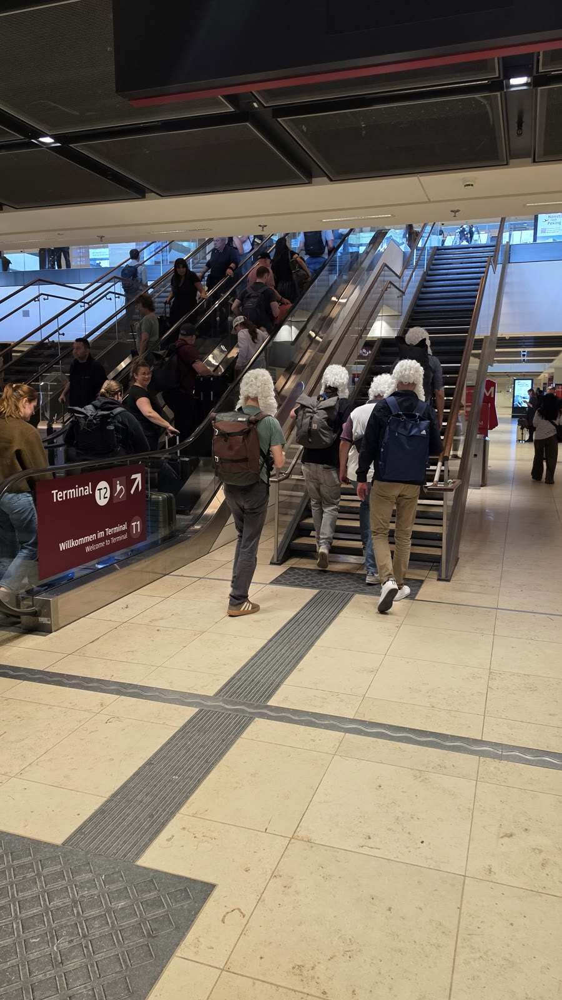<figcaption>오후 4시 31분, 베를린 브란덴부르크 공항(BER) 터미널. 여기서 시내까지 1시간 조금 넘게 걸렸습니다.</figcaption></figure>
  <p>베를린 교통요금은 A·B·C 세 구역으로 나뉩니다. 시내 대부분은 AB이고, <b>공항은 C존</b>입니다. 그래서 공항을 오갈 때는 ABC 표가 필요합니다.</p>
  <p>2026년 1월 1일부터 오른 요금 기준으로 ABC 1회권이 <b>5.00유로</b>(약 8,200원), AB 1회권이 4.00유로, 짧은 구간(Kurzstrecke)이 2.80유로입니다. 24시간권은 AB 11.20유로, ABC 12.90유로입니다.</p>
  <p>1회권은 2시간 안에서 환승이 자유롭습니다. 공항에서 시내까지 한 장으로 갑니다.</p>
  <ul class="checks">
    <li>FEX(공항 급행) — 공항에서 베를린 중앙역까지 약 23분. 2025년 12월 드레스덴선 개통으로 39분에서 줄었습니다</li>
    <li>S반 S9·S45 — 느리지만 정차역이 많아 목적지에 따라 편합니다. 요금은 같습니다</li>
    <li>RE·RB 지역열차 — 역시 같은 ABC 표로 탑니다</li>
  </ul>
  <p>저는 오후 4시 31분 공항 사진 다음이 5시 39분 베를린 동역 승강장 사진입니다. <b>1시간 8분</b>이 걸렸는데, 짐 찾고 표 사고 승강장 찾는 시간이 여기에 다 들어 있습니다.</p>
  <figure>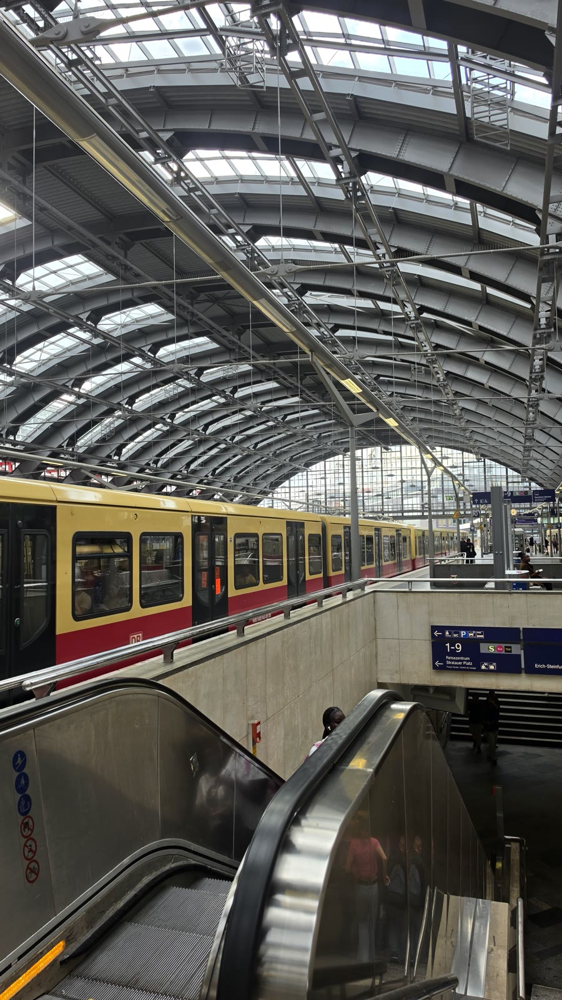<figcaption>오후 5시 39분 베를린 동역. 노란색 S반이 서 있습니다. 이 역이 이스트사이드갤러리의 출발점입니다.</figcaption></figure>
  <p>독일은 도시마다 교통 요금 체계가 달라서, 여러 도시를 도는 일정이면 철도패스를 미리 계산해 보는 편이 낫습니다.</p>
  <div style="text-align:center;margin:30px 0"><a href="https://affiliate.klook.com/redirect?aid=135164&aff_adid=1433460&k_site=https%3A%2F%2Fwww.klook.com%2Fko%2Factivity%2F9870-german-rail-interrail-pass%2F" target="_blank" rel="nofollow sponsored noopener" style="display:inline-block;padding:15px 28px;background:#E34948;color:#fff;font-weight:700;font-size:18px;text-decoration:none;border-radius:8px"><b>▶ 독일 레일패스 요금 확인하기</b></a></div>
  <h2>이스트사이드갤러리 — 1,316m, 무료, 53분</h2>
  <p>베를린 장벽이 남아 있는 곳은 여러 군데지만, 가장 길게 이어진 구간이 여기입니다. <b>1,316m</b>로 세계에서 가장 긴 야외 갤러리이기도 합니다.</p>
  <p>1990년, 21개국에서 온 화가 118명이 뮐렌슈트라세를 따라 장벽 동쪽 면에 그림을 그렸습니다. 베를린 동역에서 오버바움 다리까지 슈프레 강을 따라 이어집니다.</p>
  <figure>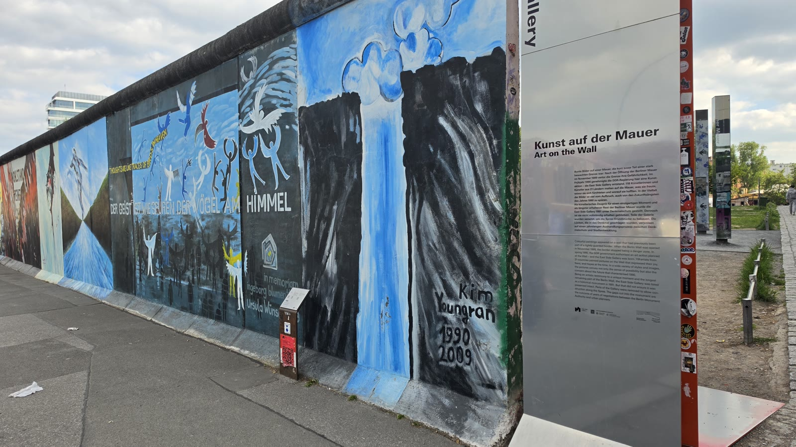<figcaption>오후 5시 51분, 갤러리 초입. '벽 위의 예술(Kunst auf der Mauer)' 안내판에서 시작합니다.</figcaption></figure>
  <p>입장료가 없고 문 여는 시간도 없습니다. 길가 담장이라 아무 때나 걸으면 됩니다. 도착 당일 일정으로 좋은 이유가 여기 있습니다.</p>
  <figure>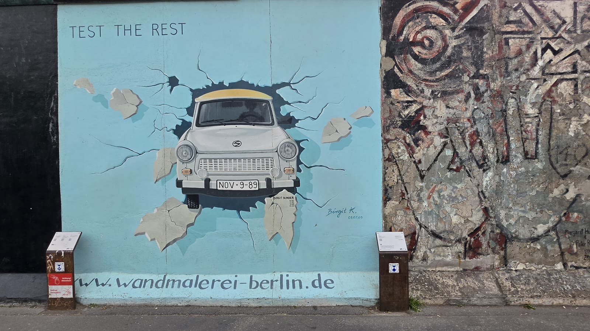<figcaption>오후 6시 7분. 동독 국민차 트라반트가 벽을 뚫고 나오는 그림. 번호판에 1989년 11월 9일이 적혀 있습니다.</figcaption></figure>
  <figure>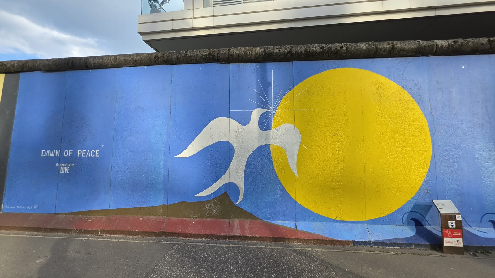<figcaption>오후 6시 17분, 'Dawn of Peace'. 노란 해와 비둘기.</figcaption></figure>
  <figure>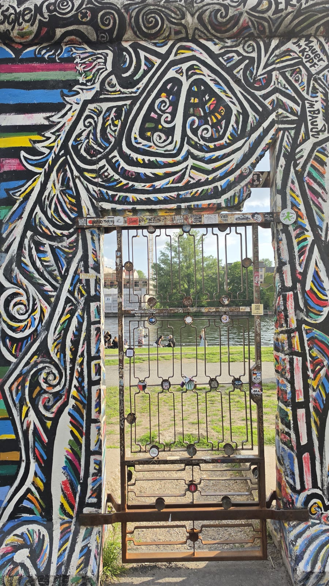<figcaption>오후 6시 23분. 벽이 끊긴 자리로 슈프레 강과 잔디밭이 보입니다.</figcaption></figure>
  <figure>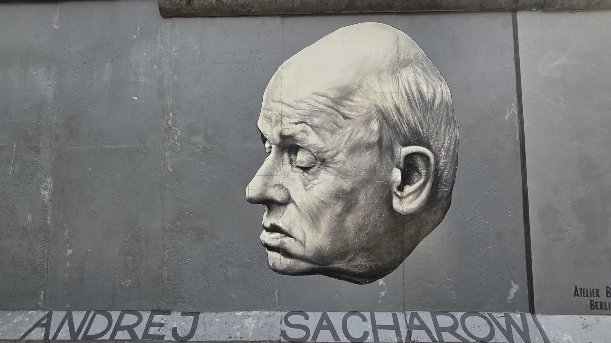<figcaption>오후 6시 24분. 소련의 물리학자이자 인권운동가 안드레이 사하로프의 얼굴이 벽면에 부조로 붙어 있습니다.</figcaption></figure>
  <figure>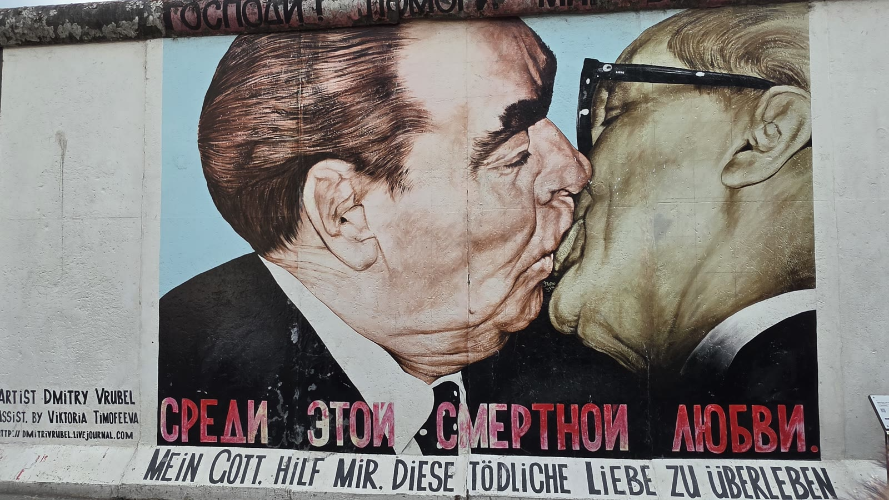<figcaption>오후 6시 33분. 브레즈네프와 호네커의 입맞춤. 갤러리에서 가장 유명한 그림이고, 앞에 사람이 제일 많습니다.</figcaption></figure>
  <figure>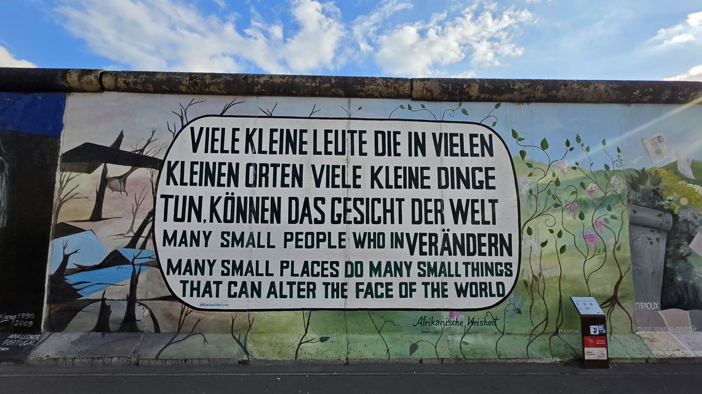<figcaption>오후 6시 42분. '많은 작은 사람들이 많은 작은 곳에서 많은 작은 일을 하면 세상의 얼굴을 바꿀 수 있다'.</figcaption></figure>
  <p>사진 시각으로 보면 5시 51분에 시작해 6시 44분에 끝났습니다. <b>53분</b>입니다. 1,316m를 53분에 걸었으니, 그림 앞에 서서 보는 시간이 걷는 시간의 몇 배였습니다.</p>
  <figure>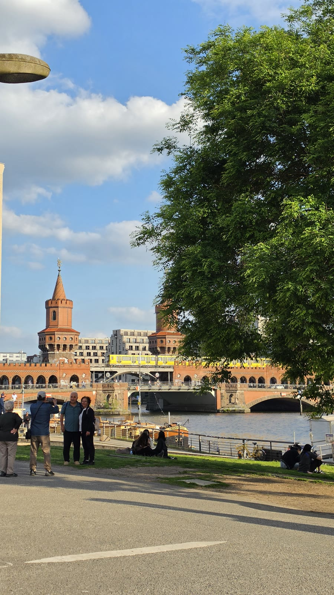<figcaption>오후 6시 44분, 갤러리 끝의 슈프레 강변. 붉은 벽돌의 오버바움 다리가 보이고 잔디에 사람들이 앉아 있습니다.</figcaption></figure>
  <h2>알렉산더광장과 붉은 시청 — 여기서 걸어서 박물관섬까지</h2>
  <figure>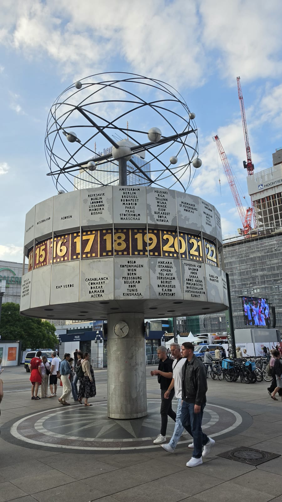<figcaption>오후 7시 26분 알렉산더광장 세계시계. 1969년에 세워졌고 도시 이름과 시간대가 원통을 돌아가며 적혀 있습니다.</figcaption></figure>
  <p>갤러리에서 알렉산더광장까지 42분 걸렸습니다. 여기가 베를린 동쪽의 중심이고, 368m TV탑이 바로 옆입니다.</p>
  <p>TV탑 전망대는 온라인 예매가 <b>24.50유로</b>부터, 현장 구매는 28유로부터입니다. 날짜가 가까워질수록 값이 오르는 방식이라 올라갈 계획이면 미리 잡는 편이 쌉니다.</p>
  <div style="text-align:center;margin:30px 0"><a href="https://affiliate.klook.com/redirect?aid=135164&aff_adid=1433455&k_site=https%3A%2F%2Fwww.klook.com%2Fko%2Factivity%2F108118-berlin-tv-tower-fast-view-entry-ticket%2F" target="_blank" rel="nofollow sponsored noopener" style="display:inline-block;padding:15px 28px;background:#E34948;color:#fff;font-weight:700;font-size:18px;text-decoration:none;border-radius:8px"><b>▶ 베를린 TV탑 입장권 요금·시간 확인하기</b></a></div>
  <figure>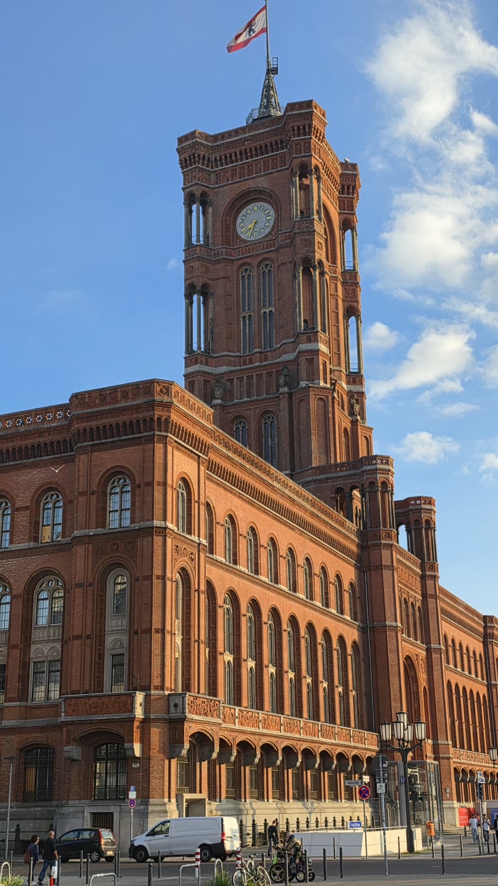<figcaption>오후 7시 34분 붉은 시청. 이름 그대로 붉은 벽돌 건물이고 지금도 베를린 시장 집무실이 있습니다.</figcaption></figure>
  <p>알렉산더광장에서 박물관섬까지는 걸어서 갑니다. 저는 광장 사진(19:26)에서 루스트가르텐 사진(20:12)까지 <b>46분</b>이 걸렸는데, 중간에 붉은 시청과 마리엔교회에서 멈춘 시간이 포함돼 있습니다.</p>
  <h2>박물관섬과 베를린 대성당 — 해 질 무렵이 가장 좋습니다</h2>
  <figure>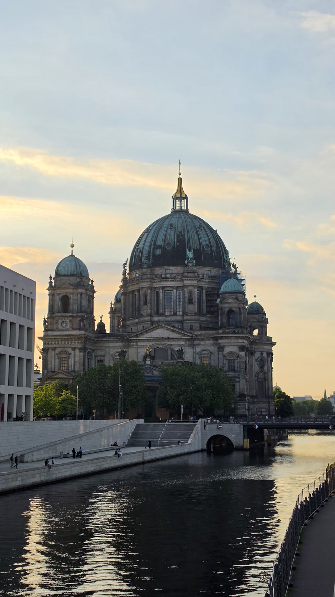<figcaption>오후 7시 52분, 슈프레 강 건너에서 본 베를린 대성당. 강물에 하늘색이 그대로 비칩니다.</figcaption></figure>
  <p>베를린 대성당 내부 관람은 성인 <b>15유로</b>, 할인 12유로, 베를린 웰컴카드 소지자 11유로입니다(공식 홈페이지 2026년 9월 기준). 9월 기준 운영 시간은 9시~18시, 입장 마감은 폐관 1시간 전입니다.</p>
  <p>저는 저녁에 도착해 바깥에서만 봤습니다. 안에 들어가려면 낮 일정으로 따로 잡아야 합니다.</p>
  <figure>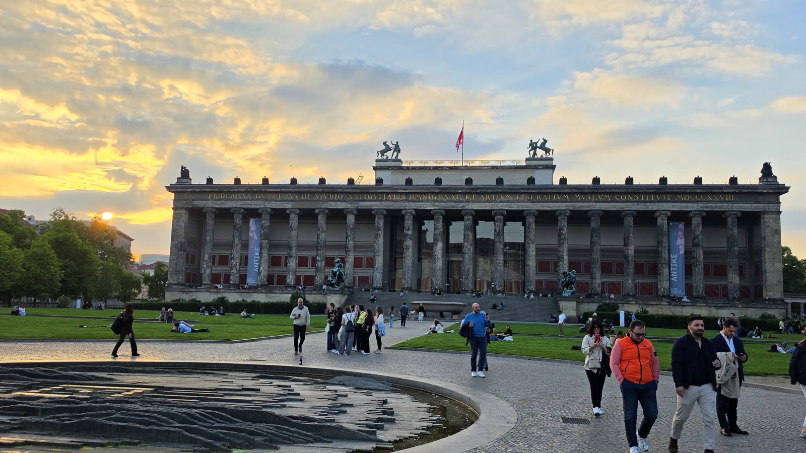<figcaption>오후 8시 12분 루스트가르텐. 구 박물관 앞 분수와 잔디밭, 그리고 노을.</figcaption></figure>
  <p>박물관섬에는 구 박물관·신 박물관·구 국립미술관·보데 박물관·페르가몬 박물관이 모여 있습니다. 하루에 여러 곳을 볼 거라면 개별 표보다 5개 박물관 통합권이 유리합니다.</p>
  <h2>남들이 잘 안 쓰는 이야기 — 위도 52도의 5월은 하루가 다섯 시간 더 깁니다</h2>
  <p>이 글에서 가장 쓸모 있는 부분이 여기라고 생각합니다.</p>
  <figure>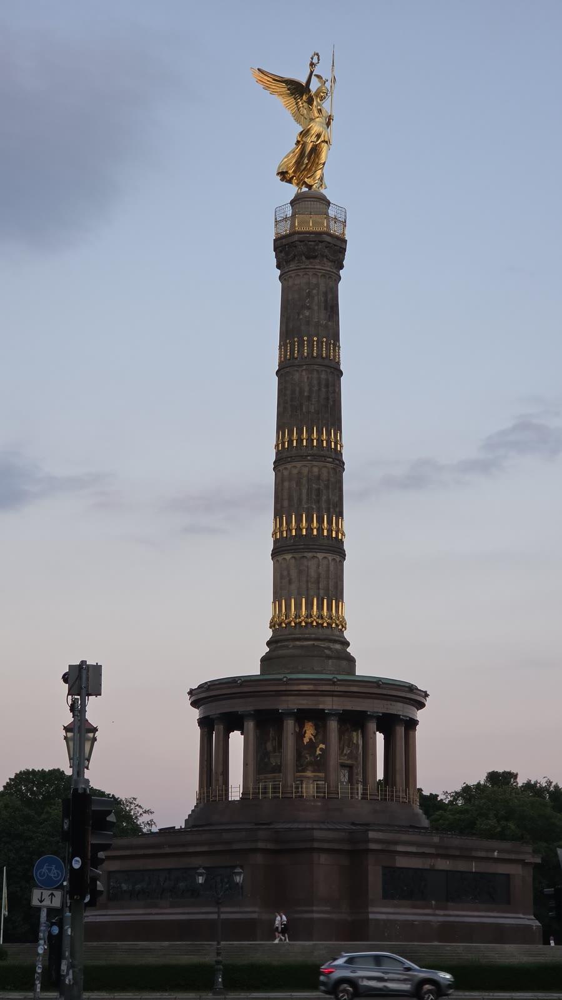<figcaption>밤 9시 3분 전승기념탑. 꼭대기 금빛 승리의 여신상에 아직 빛이 남아 있고 하늘도 밝습니다.</figcaption></figure>
  <p>밤 9시 사진인데 조명 없이 찍혔습니다. 베를린은 북위 52.5도에 있고, 5월 하순이면 밤 9시가 넘어야 해가 집니다. 서울보다 일몰이 두 시간 가까이 늦습니다.</p>
  <p>여기서 실제로 달라지는 것이 세 가지입니다.</p>
  <ul class="checks">
    <li>오후 4~5시 도착 항공편이라도 첫날 관광이 가능합니다. 짐만 맡기고 바로 나오면 네 시간이 남습니다</li>
    <li>야경 사진을 찍으려면 밤 10시까지 기다려야 합니다. 첫날에 야경을 넣으면 일정이 무리가 됩니다</li>
    <li>반대로 아침은 5시 전부터 밝습니다. 이른 시간에 사람 없는 광장을 보고 싶다면 새벽이 낫습니다</li>
  </ul>
  <div class="note"><p>첫날 일정은 '몇 시에 도착하는가'가 아니라 '그날 해가 몇 시에 지는가'로 짜야 합니다.</p></div>
  <p>반대로 겨울에 가면 같은 계산이 거꾸로 돌아갑니다. 12월 베를린은 오후 4시면 어두워집니다. 같은 동선을 겨울에 짜면 이스트사이드갤러리 그림이 제대로 안 보입니다.</p>
  <h2>첫날 짐과 옷 — 5월 베를린은 아침저녁이 찹니다</h2>
  <p>사진 속 사람들 옷차림이 반팔부터 바람막이까지 섞여 있습니다. 5월 하순 베를린은 낮에는 반팔이 가능하지만 해가 지면 바람이 찹니다.</p>
  <p>도착 당일에 바로 걸어 다닐 생각이라면 기내 가방에 겉옷 하나와 편한 신발을 넣어 두는 편이 낫습니다. 이스트사이드갤러리만 1.3km이고, 여기에 알렉산더광장·박물관섬까지 붙으면 첫날에만 6~7km를 걷습니다.</p>
  <div style="text-align:center;margin:30px 0"><a href="https://link.coupang.com/a/g5qs9wUmXI" target="_blank" rel="nofollow sponsored noopener" style="display:inline-block;padding:15px 28px;background:#E34948;color:#fff;font-weight:700;font-size:18px;text-decoration:none;border-radius:8px"><b>▶ 유럽 여행용 멀티 어댑터 보러 가기</b></a></div>
  <p>독일 콘센트는 우리와 모양이 같은 C형이라 어댑터 없이도 대부분 꽂힙니다. 다만 USB 포트가 여럿 달린 멀티 어댑터가 하나 있으면 호텔 콘센트가 부족할 때 편합니다.</p>
  <h2>자주 묻는 질문</h2>
  <p><b>베를린 공항에서 시내까지 얼마나 걸리나요?</b></p>
  <p>FEX 급행으로 중앙역까지 약 23분입니다. 다만 실제로는 입국·짐 찾기·표 구입이 더 붙습니다. 저는 공항 터미널 사진에서 시내 역 사진까지 1시간 8분이 걸렸습니다.</p>
  <p><b>공항 갈 때 표는 어떤 걸 사나요?</b></p>
  <p>공항이 C존이라 ABC 표가 필요합니다. 2026년 기준 1회권 5.00유로, 24시간권 12.90유로입니다. 시내만 다니는 날은 AB 표(1회권 4.00유로)로 충분합니다.</p>
  <p><b>이스트사이드갤러리는 입장료가 있나요?</b></p>
  <p>없습니다. 길가에 서 있는 담장이라 문도 없고 여는 시간도 없습니다. 아무 때나 걸을 수 있습니다.</p>
  <p><b>이스트사이드갤러리는 얼마나 걸리나요?</b></p>
  <p>길이가 1,316m입니다. 저는 사진을 찍으며 53분 걸렸습니다. 빠르게 지나가면 20~25분, 그림마다 멈추면 한 시간이 넘습니다.</p>
  <p><b>도착 당일에 관광을 넣어도 될까요?</b></p>
  <p>5~8월이라면 넣을 만합니다. 해가 밤 9시 넘어 집니다. 다만 실내 시설은 대부분 저녁에 문을 닫으니, 첫날은 야외 위주로 잡는 게 맞습니다.</p>
  <h2>정리하면</h2>
  <p>베를린 도착 첫날 저녁은 야외로만 채우면 됩니다. 이스트사이드갤러리는 무료에 시간 제약이 없고, 알렉산더광장과 박물관섬은 걸어서 이어집니다.</p>
  <p>공항 C존 표 한 장, 편한 신발, 그리고 그날 일몰 시각. 이 셋만 확인하면 첫날이 통째로 살아납니다.</p>
  <p>다음 글에서는 이튿날 베를린 도보 코스(체크포인트 찰리 → 홀로코스트 추모비 → 브란덴부르크문 → 국회의사당 → 젠다르멘마르크트)를 시각 그대로 정리하겠습니다.</p>
  <p style="font-size:12px;color:#999;line-height:1.6;margin-top:36px">방문 날짜와 시각은 2026년 5월 22~24일 여행 중 찍은 사진의 촬영 시각(중부유럽 현지 시각)으로 확인했습니다. 요금·운영 시간은 2026년 9월 16일에 확인한 공개 정보이며 바뀔 수 있습니다. 방문 전 공식 홈페이지에서 다시 확인하세요. 원화 환산은 1유로 1,632원 기준의 대략치입니다. 식사·숙소·개인 지출은 사진으로 확인되지 않아 적지 않았습니다. 이스트사이드갤러리 정보는 베를린주 기념물청과 베를린장벽재단, 교통요금은 VBB의 2026년 1월 1일 요금 인상 공지, 대성당 요금은 베를린 대성당 공식 홈페이지, TV탑 요금은 공식 예매가를 참고했습니다. 일몰 시각은 천문 계산값입니다.</p>
</main>

<footer class="foot">
  <div class="wrap"><p>나의 투자 그리고 행복한 여행 · 투자 판단의 참고 자료일 뿐, 매수·매도를 권유하지 않습니다.</p></div>
</footer>
